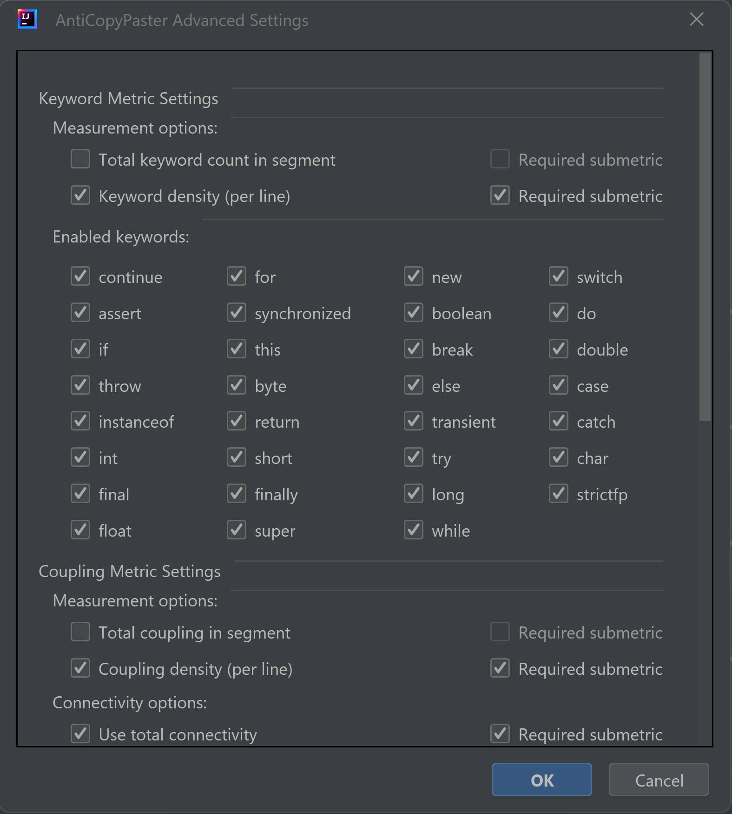

AntiCopyPaster - Summer 2023 Research
This is the documentation site for our research to extend the functionality of the AntiCopyPaster tool for the IntelliJ IDE.
AntiCopyPaster is an open-source plugin for IntelliJ IDEA that automatically detects copied and pasted code and suggests an appropriate extraction.
Previously developed by a team at Rochester Institute of Technology and JetBrains Research, our goal was to take this functionality and improve upon its design and performance.
To improve the original AntiCopyPaster plugin, our team focused on redesigning the user interface, implementing a new method of metric clustering, adding multi-project support, and tracking user data. As we added to the project, it also became necessary to modify the preexisting unit tests to reflect our changes.
Improved User Interface
Clustering Settings
Advanced Settings
Statistics Collection Settings